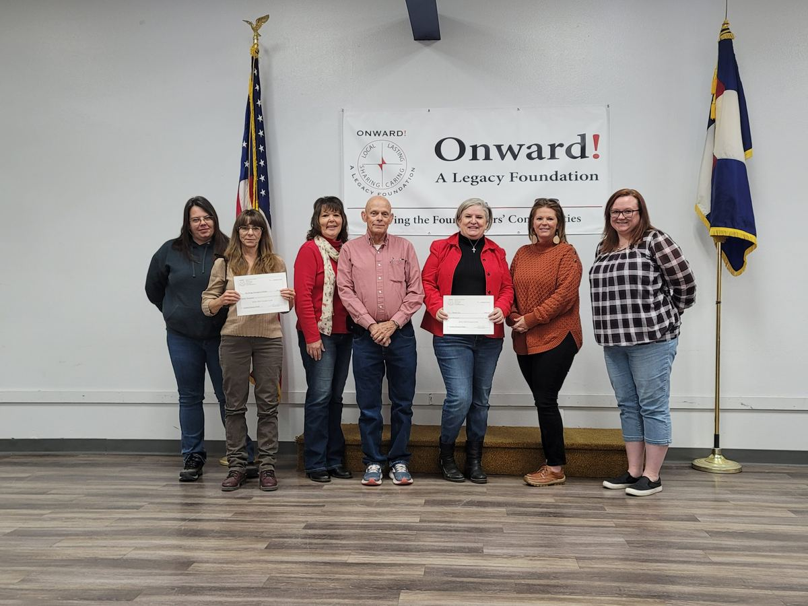

Home / Grants
For non-profits
Grants that strengthen Southwest Colorado.
Each fall Onward! and four partner funds award short-term enhancement grants to non-profits doing good work across five counties.
The grant cycle opens September 1. Applications are accepted September 1 through October 15.
Guidelines & applicationWho can apply
Criteria to apply
- Be a not-for-profit project or organization located in and providing services to Montezuma, Dolores, La Plata, Archuleta or San Juan County, Colorado
- Have 501(c)(3) status
- Have an organizational structure that demonstrates professionalism and accountability, such as a board of directors or similar governance
- Have well defined goals and a method for evaluating success for the grant activity proposed
Grants support general operations or a specific program in arts & culture, basic needs, education, social services, sports & athletics, and youth.

How it works
From application to celebration
Check the criteria and the FAQs before you start.
One online form about your organization, your request and how you will measure success.
Applications are reviewed after the October 15 deadline. Four additional grant fund partners take part to raise the level of giving.
Awardees complete a final grant report and take part in a media event.
Application paperwork and information
Questions may be directed to grants@onwardfoundation.org.
Recent awardees
2024 grant winners
In 2024, Onward! was able to fully or partially fund grant applications from 34 non-profit organizations.